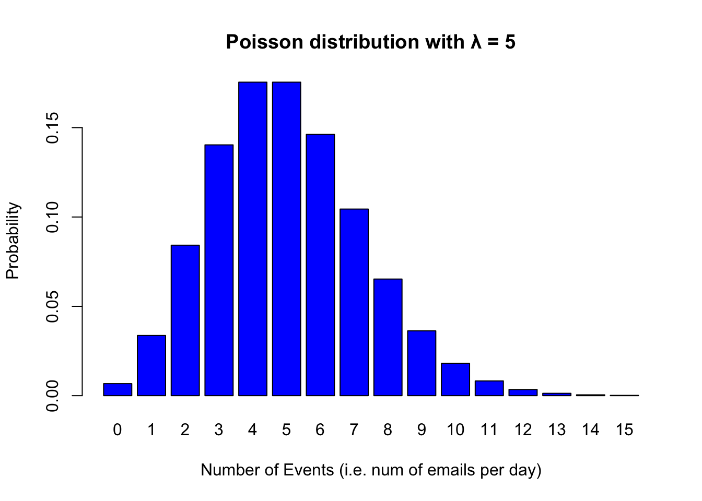

Chapter 13 Modeling Poisson Distribution
Counting is an inherently discrete process (not continuous). For example, a sentence can have 4 words or 5 words. However, it cannot have 4.5 words. In addition, counting has no negative values. For example, a sentence can have 2, 3 or 20 words in it but it cannot have -1 words in it. It just doesn’t make sense. Thus, technically, we cannot model count data with a normal distribution assumption. Instead, count processes are modeled wit what is called a Poisson distribution named after Siméon Denis Poisson. When the outcome (dependent variable) is a count, it is more appropriate to use modeling techniques that make a Poisson assumption.
13.1 Poisson Distribution
Poisson Distribution models count distributions. It has a single parameter \(\lambda\) which builds in both the central tendency and spread (so to speak). \(\lambda\) is the average rate at which an event would occur at a specified time. It tells you the average number of events you would expect to occur in a given interval.
For example, assume that on average you get 5 email per day. A day is your interval and \(\lambda\) is the average number of emails. Given \(\lambda = 5\), the Poisson distribution of emails per day looks like the following.
# Set the lambda parameter for the Poisson distribution
lambda <- 5
# Generate values for x (number of events) and their corresponding probabilities
x <- 0:15
probabilities <- dpois(x, lambda)
barplot(probabilities, names.arg = x, col = "blue",
xlab = "Number of Events (i.e. num of emails per day)",
ylab = "Probability")
# Add a title and labels to the plot
title(paste("Poisson distribution with λ =", lambda))
The bar plot above plots the probability density of each event. In other words, it just gives us a probability for each number of emails per day. As you can see, when \(\lambda = 5\), it is more likely to get 4 or 5 emails than 15 emails per day. Let us play with the number of events to see what the probability distribution looks like.
# Set the lambda parameter for the Poisson distribution
lambda <- 5
# Generate values for x (number of events) and their corresponding probabilities
x <- 0:50
probabilities <- dpois(x, lambda)
barplot(probabilities, names.arg = x, col = "blue",
xlab = "Number of Events (i.e. num of emails per day)",
ylab = "Probability")
# Add a title and labels to the plot
title(paste("Poisson distribution with λ =", lambda))Notice how we kept \(\lambda\) constant and merely increased the number of emails per day. We now have a long tail with probabilities close to 0. This just simply means ‘if you are receiving on average 5 emails per day, then the probability of getting 50 emails on a given day is very low (close to 0).’
Let us now change our \(\lambda\) to see what it looks like. Assume that on average you get 20 emails per day.
# Set the lambda parameter for the Poisson distribution
lambda <- 20
# Generate values for x (number of events) and their corresponding probabilities
x <- 0:50
probabilities <- dpois(x, lambda)
barplot(probabilities, names.arg = x, col = "blue",
xlab = "Number of Events (i.e. num of emails per day)",
ylab = "Probability")
# Add a title and labels to the plot
title(paste("Poisson distribution with λ =", lambda))So far, we have used the dpois() function to generate the probability distributions of possible events. It takes in an array of possible event values and a \(\lambda\) and returns the probability associated with each event given \(\lambda\). These are theoretical values. What the barplot above tells us is the following: ‘For any given day, you are likely to get 20 emails. It is also equally likely that you’ll get 18 or 21 emails. It is also possible that you only get 9 emails but it is a lot less likely. It is very unlikely that you’ll get no emails at all.’
Given the probabilities above, how does a real day look like then? For simulating real life scenarios, we need to randomly sample some data using the probabilities above. For that, we’ll use the rpois() function. The r prefix before distributions suggests that we want to do some random sampling. We’ve seen this several times.
dnorm()–rnorm()dbinom()–rbinom()dpois()–rpois()
Let us now simulate a single day with \(\lambda = 20\). Think of it like ‘On average I get 20 emails per day. Given that today is just another day in the office, how many emails am I getting today?’ Each time we run the code below, we’ll get a slightly different number as the sampling is random.
## [1] 37Now, let us project what a month will look like in terms of the number of emails I receive. For that, we just need to sample not once but 30 times.
## [1] 19 15 18 17 23 20 21 14 20 25 26 15 15 17 18 12 18 19 18 24 17 13 15 19 18
## [26] 26 15 14 14 17Let us plot the emails to get a better visual.
13.2 Modeling with Poisson distribution
When modeling data where the outcome is a count, we should assume a Poisson distribution and model our data accordingly. To do this, we’ll use generalized linear models with a Possion assumption. Our goal is to estimate the \(\lambda\) parameter. For any given set of independent variables, we assume that the outcome will be:
- \(y \sim Poisson(\lambda)\)
Let us first get some data though.
13.2.1 Data
We’ll use the Nettle (1999) data which we used earlier in the semester.
## Rows: 74 Columns: 5
## ── Column specification ────────────────────────────────────────────────────────
## Delimiter: ","
## chr (1): Country
## dbl (4): Population, Area, MGS, Langs
##
## ℹ Use `spec()` to retrieve the full column specification for this data.
## ℹ Specify the column types or set `show_col_types = FALSE` to quiet this message.## # A tibble: 74 × 5
## Country Population Area MGS Langs
## <chr> <dbl> <dbl> <dbl> <dbl>
## 1 Algeria 4.41 6.38 6.6 18
## 2 Angola 4.01 6.1 6.22 42
## 3 Australia 4.24 6.89 6 234
## 4 Bangladesh 5.07 5.16 7.4 37
## 5 Benin 3.69 5.05 7.14 52
## 6 Bolivia 3.88 6.04 6.92 38
## 7 Botswana 3.13 5.76 4.6 27
## 8 Brazil 5.19 6.93 9.71 209
## 9 Burkina Faso 3.97 5.44 5.17 75
## 10 CAR 3.5 5.79 8.08 94
## # ℹ 64 more rowsThe data consists of population, area, mean growing season (MGS), and number of languages spoken in a country. For now, we’ll just try to predict the number of language spoken in a country as a function of the MGS.
## # A tibble: 2 × 5
## term estimate std.error statistic p.value
## <chr> <dbl> <dbl> <dbl> <dbl>
## 1 (Intercept) 3.42 0.0392 87.1 0
## 2 MGS 0.141 0.00453 31.2 2.42e-213Let us interpret the coefficients. We observe that the intercept is positive and the p-value is very small. This indicates a positive correlation between the number of languages and mean number growing seasons and the relationship is statistically significant. There’s one thing to pay attention though. The coefficients in glm poisson are expressed in logarithms. In order for them to make a bit more sense, we need to exponantiate them (remember that exponentiation is the inverse of logarithms).
## [1] 30.45637## [1] 1.151545The intercept is 30.45637. This means that on average, a country with 0 months of growing season (e.g. desert of ice/snow) will have 30 languages. Let us predict other values.
## [1] 35.07188 40.38685 46.50727 53.55521 61.67123 71.01719 81.77948
## [8] 94.17275 108.44415 124.87831 143.80298 165.59559## # A tibble: 6 × 5
## Country Population Area MGS Langs
## <chr> <dbl> <dbl> <dbl> <dbl>
## 1 Guyana 2.9 5.33 12 14
## 2 Oman 3.19 5.33 0 8
## 3 Solomon Islands 3.52 4.46 12 66
## 4 Suriname 2.63 5.21 12 17
## 5 Vanuatu 2.21 4.09 12 111
## 6 Yemen 4.09 5.72 0 6mgs_model_1 <- mgs_model <- glm(Langs ~ MGS, data = nettle,
family = 'poisson')
mgs_model_2 <- mgs_model <- glm(Langs ~ Population + Area + MGS, data = nettle,
family = 'poisson')
library(lmtest)
lr_test <- lrtest(mgs_model_1, mgs_model_2)
print(lr_test)## Likelihood ratio test
##
## Model 1: Langs ~ MGS
## Model 2: Langs ~ Population + Area + MGS
## #Df LogLik Df Chisq Pr(>Chisq)
## 1 2 -4576.2
## 2 4 -2861.7 2 3428.9 < 2.2e-16 ***
## ---
## Signif. codes: 0 '***' 0.001 '**' 0.01 '*' 0.05 '.' 0.1 ' ' 1##
## Attaching package: 'MASS'## The following object is masked from 'package:dplyr':
##
## selectmgs_model_3 <- mgs_model <- glm.nb(Langs ~ Population + Area + MGS, data = nettle)
tidy(mgs_model_3)## # A tibble: 4 × 5
## term estimate std.error statistic p.value
## <chr> <dbl> <dbl> <dbl> <dbl>
## 1 (Intercept) -4.01 1.25 -3.21 1.35e- 3
## 2 Population 0.401 0.188 2.14 3.25e- 2
## 3 Area 0.870 0.245 3.55 3.88e- 4
## 4 MGS 0.238 0.0363 6.55 5.74e-11## Likelihood ratio test
##
## Model 1: Langs ~ Population + Area + MGS
## Model 2: Langs ~ Population + Area + MGS
## #Df LogLik Df Chisq Pr(>Chisq)
## 1 4 -2861.73
## 2 5 -379.84 1 4963.8 < 2.2e-16 ***
## ---
## Signif. codes: 0 '***' 0.001 '**' 0.01 '*' 0.05 '.' 0.1 ' ' 1